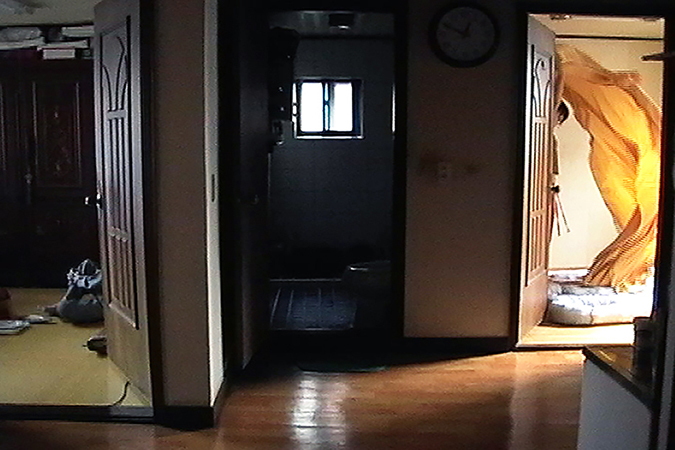
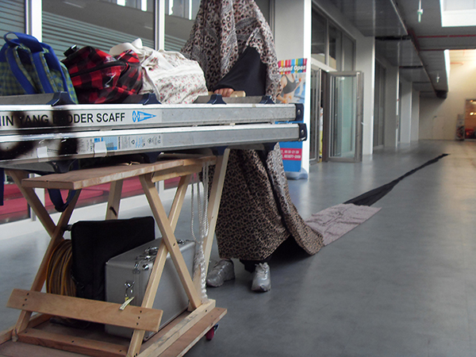
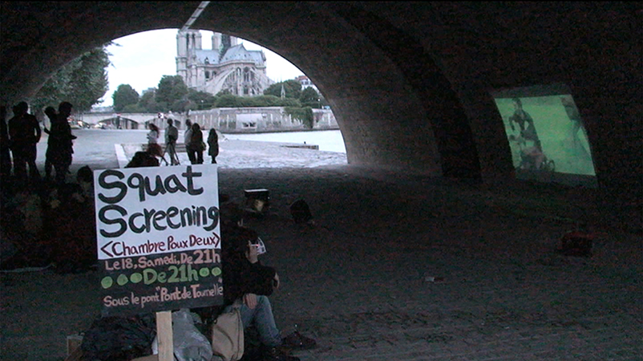
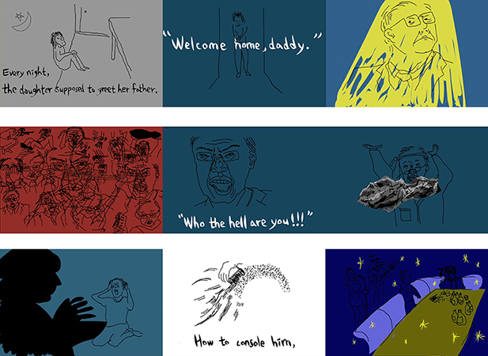
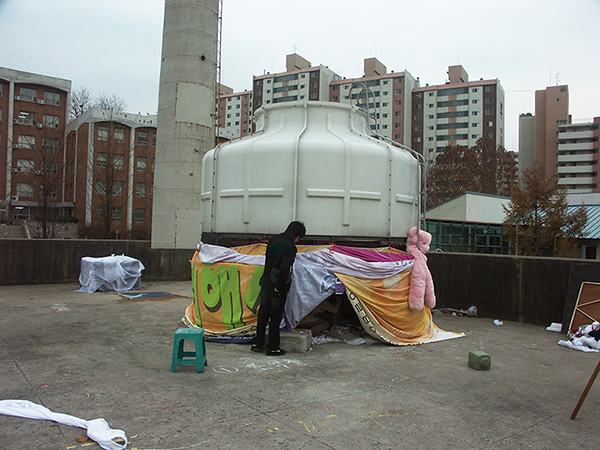

- 2015. 8. 21. 20:00
- 케이크 갤러리
- 조익정 Ikjung Cho
- “매우 현재화된 시선과 목소리로 /
지극히 국지적인 맥락에서 이해될 수 있지만 한편으로는 보편적인 고민이나 이야기에 주목할 수 있도록 /
이야기가 발칙하고 뻔뻔할지언정 작가 본인이 놓인 관계는 가볍지 않도록 /
정말 바라보고 생각할 수 있도록 그리고 무엇보다 기대를 배반하여 쉽게 기대할 수 없도록
많은 질문과 실험을 하고 있고, 앞으로도 하고자 한다.”
- <옥상곰 Rooftop Bear>, 11', 2007
- 몸짓 기록.
- <냉장고 네 대>, 12', 2009
- 시놉시스가 제공되지 않습니다.
- <너네가 너네>, 30', 2014
- 시놉시스가 제공되지 않습니다.
- <프로텍츠 바이 오커페이션 Protects by Occupation>, 5', 2011
- 뮤직비디오.
- <이렇게 앉아만있다가는>, 4', 2014
- 뮤직비디오.
- <토크: 스쾃 스크리닝>
- 조익정은 전시장이나 극장이 아닌 곳에서,
도시의 어느 야외 장소에서 무단으로 혹은 허가를 받고 본인의 비디오 작업을 상영하는 시도를
2009년부터 간헐적으로 서울, 파리, 런던, 더블린 등지에서 진행하고 있다.
<토크: 스쾃 스크리닝>은 조익정 작가의 이런 시도와 비디오 릴레이 탄산이 대화하는 자리이다.
-

-

-

-

-
